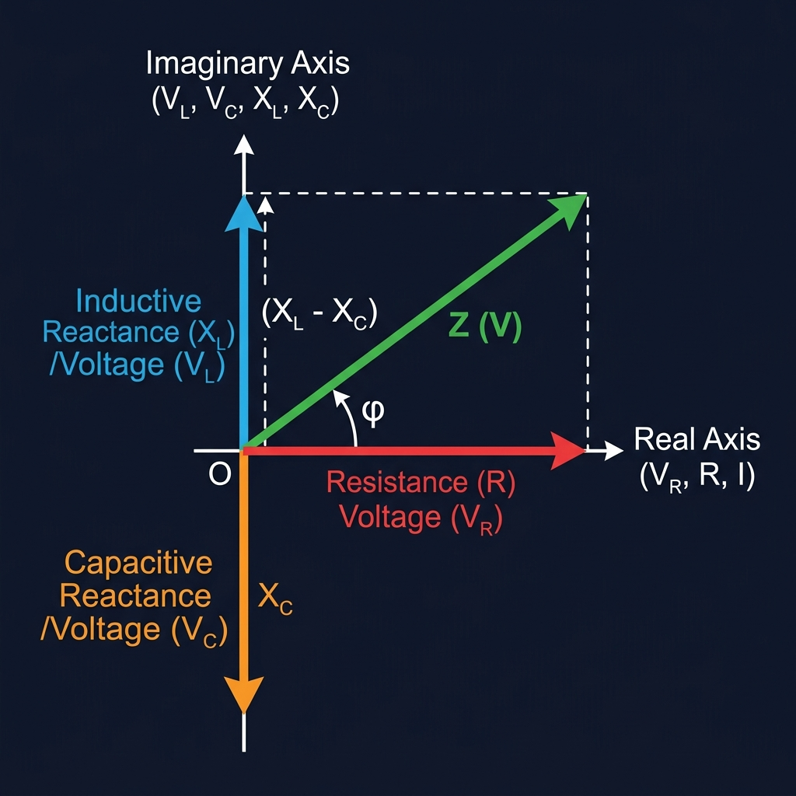
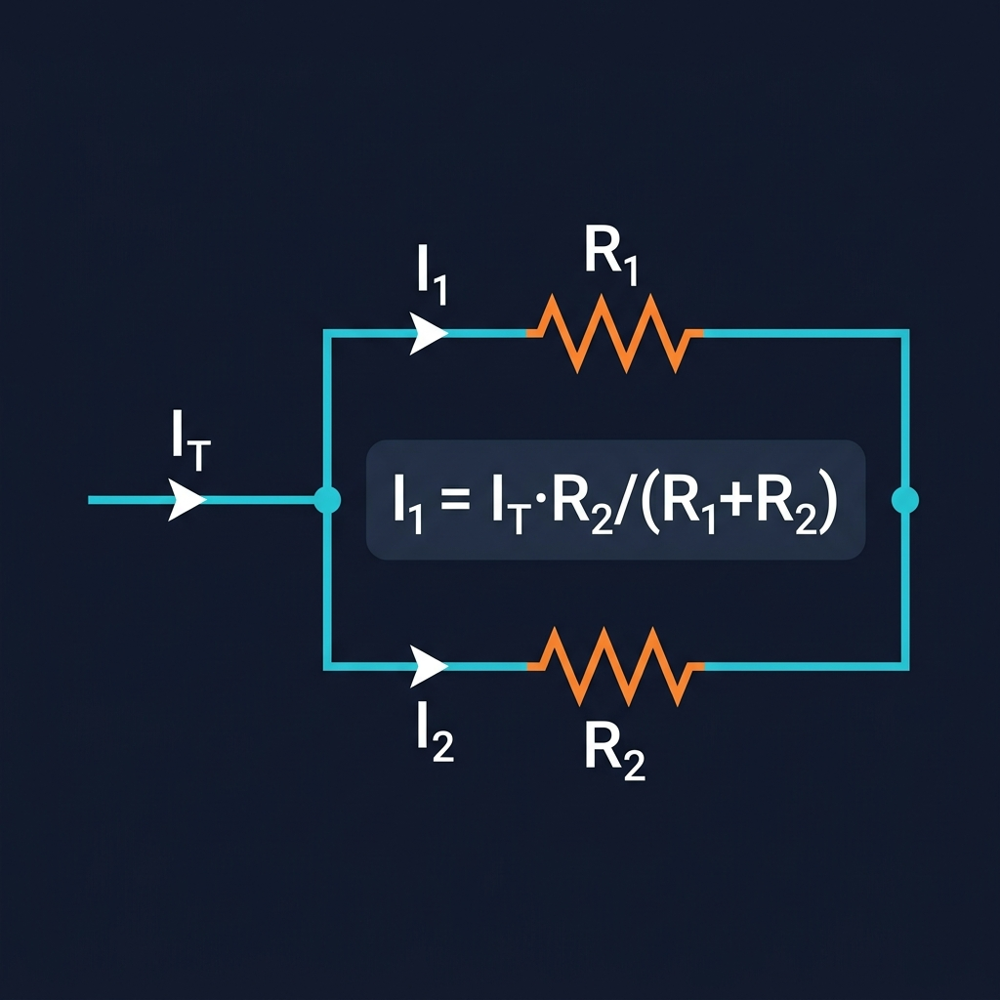
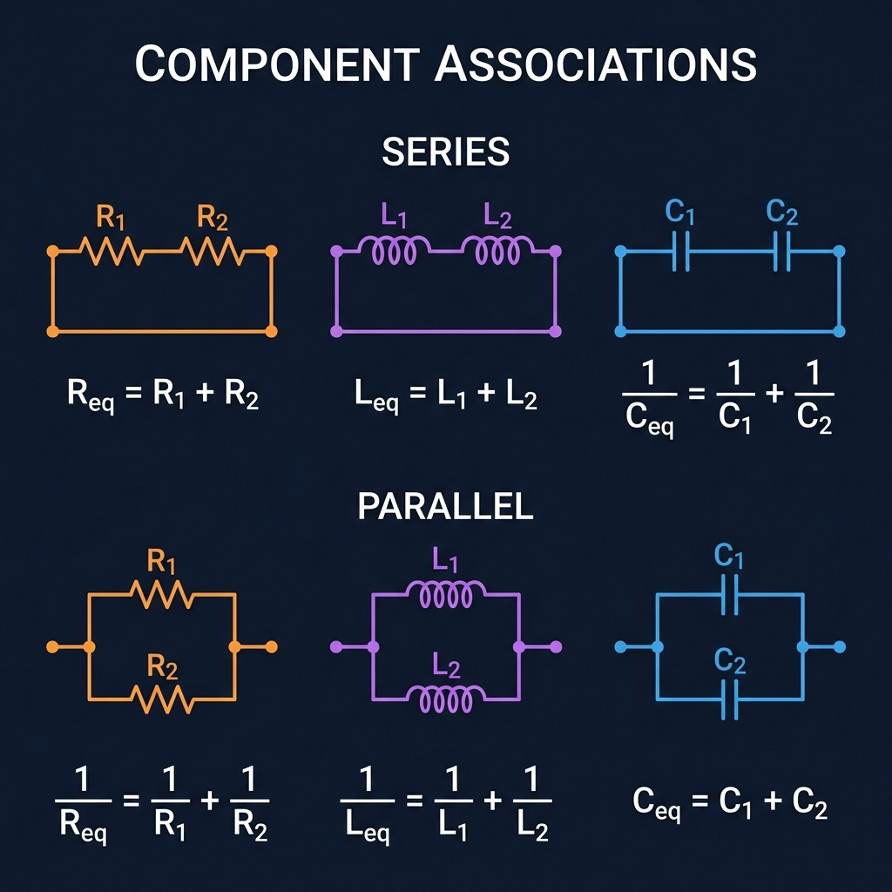

Q4 Garantida (100%)
A Lógica dos Circuitos CA (RLC)
A fonte alternada tem o formato V(t) = Vpico · sen(ωt). Cuidado com Vpico vs Vrms.
Circuito Série Genérico
A ressonância ocorre quando XL = XC.
Oposição da bobina (Ω). Cresce com a frequência.
Oposição do capacitor (Ω). Diminui com a frequência.
A resistência "total" vista pela fonte. Na ressonância: Z = R (mínimo).
Conceitos Avançados
Ressonância & Ângulo de Fase

Frequência de Ressonância ⭐
Na ressonância: XL = XC, logo Z = R (mínimo) e a corrente é máxima.
Em Hz: f0 = 1 / (2π√(LC))
Ângulo de Fase (φ)
Fundamentos de Circuitos
Divisor de Corrente & Associações
Regras para simplificar circuitos com resistores, indutores e capacitores.


Para 2 resistores em paralelo, a forma mais usada é:
A corrente se divide inversamente à resistência: o ramo de menor R leva mais corrente.
Dica: Compare com o divisor de tensão (Vk = V·Rk/Rtotal) — são "inversos"!
Mesma corrente em todos. Tensão se divide.
Req Sempre > maior resistor individual
Mesma tensão em todos. Corrente se divide.
2 resistores Req = (R1 · R2) / (R1 + R2)
Req Sempre < menor resistor individual
Comportam-se igual a resistores: somam em série.
Também igual a resistores: inverso da soma dos inversos.
2 indutores Leq = (L1 · L2) / (L1 + L2)
⚠️ Invertido! Capacitores em série somam como resistores em paralelo.
2 capacitores Ceq = (C1 · C2) / (C1 + C2)
Ceq Sempre < menor capacitor individual
⚠️ Invertido! Capacitores em paralelo somam diretamente (como resistores em série).
Ceq Sempre > maior capacitor individual
📋 Resumo Rápido — Quem soma como?
Série = Soma Direta
R, L
Paralelo = Soma Direta
C
Série = Inverso
C
Paralelo = Inverso
R, L
Macete: Capacitor é sempre o "rebelde" — faz tudo ao contrário de R e L.